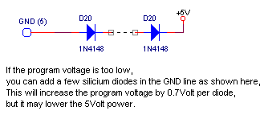

Software
Download
|
Mindstorms & PICs
programmer hardware, version 1
|
september 2001
|
Why
another PICprogrammer 
The reason is simple, everything I tried
didn't work for 100% (specially programming the normal version of the PIC16F84
give rise to problems).
Specifications
The programmer connects to a free RS232
port of the PC and doesn't need external power supply.
The programmer is tested under windows-98
on a PII-66 and a PIII-1000.
Everything, including sources, is available
(for free of course).
Tested
PICs (ordened by family)
| 16x8x |
16F62x |
16F87x |
|
|
|
16F84
16F84A |
16F628 |
16F876 |
|
|
|
Operating
Instructions
It's important to
follow the steps described below in the right order, because applying a
voltage to the programmer pin of the PIC, without the PIC is supplied from
a +5Volt source, can damage the PIC.
-
start the program and select the right
RS232 port (this will ensure that the voltage on the programmer
will be ok) The voltages generated by the circuit can be tested before
inserting a PIC, see
here)
-
set the switch on the programmer in
the run mode (this will ensure that the program voltage will not
be present until the +5Volt is present)
-
now connect the programmer to
the selected RS232 port
-
now you can savely put the switch on the
programmer in program mode
Circuit
The circuit shown below is straight forward.
The major differences with other simple programmers is the feedback lines
for both clock and data signals (see for futher details, the current
design).
You can roughly test if your serial port
is capable of delivering enough current, by connecting a resistor between
DTR and GND and measuring the voltage.
Start the program, Tools / Settings
/ Commport / ...
Connect to right port, enable DTR and
measure the voltage between DTR (pin 4) and GND (pin5)
The voltage should be >=5Volt, for the
resistor value yields
1 kOhm
--> 5 mA (will do for the new devices, i.e. 16F84A)
500 Ohm
--> 10 mA (necessary for old devices, i.e. 16F84

Testing
the circuit
-
check the wiring
-
always start the program before connecting
the circuit to the RS232 port (another program could set the RS232 port
totally wrong)
-
goto menu Tools / Settings / Commport / ...
CTS and DSR panels light yellow
-
set the switch in RUN mode and connect the
circuit to the RS232 port
-
now activate the connect checkbox, and CTS
and DSR panels should light green
-
activate DTR checkbox and CTS panel should
light red
-
activate RTS checkbox and DSR panel should
light red
-
Now test if the voltage on the PIC-foot are
according to the next table
With the switch in RUN mode, approximally
the following voltages should be measured at the mentioned PIC pins
| DTR low, RTS low |
DTR high, RTS low |
DTR low, RTS high |
DTR high, RTS high |
4 = 5.5 V
13 = 1.5 V
14 = 5.5 V
all others 0 V |
4 = 5.5 V
13 = 4.5 V
14 = 5.5 V
all others 0 V |
4 = 5.5 V
12 = 10 .. 14 V
13 = 1.5 V
14 = 5.5 V
all others 0 V |
4 = 5.5 V
12 = 10 .. 14 V
13 = 4.5 V
14 = 5.5 V
all others 0 V |
With the switch in program mode, all measurements
should be the same, except pin 4 should measure 13 Volt in case DTR and/or
RTS is high.
History
|
|
| ideas for the future |
-
some suggest small capacitors (of 300 pF ?)
are needed across data and clock lines ?
|
| 3-11-2001 |
-
disabling the oscillator, in case a X-tal
is connected to the PIC
-
connector with signals for in-circuit-programming
of PIC's on other boards
-
connecting an external power supply (if more
electronics is present)
-
make it fully compatible with the cheaper
(and complexer) 16F627/16F628
|
| October 2001 |
-
Idea added to increase the program voltage
in case of bad RS232 lines
|
| Septemnber 2001 |
|
Design
considerations
Having unpredictable results with a number
of circuits in combination with different programmers, we decided to start
from scratch.
There are 2 major problems to overcome,
getting enough power from the RS232 port and realizing accurate timing
from a high level program language (like Delphi).
The standard outputs of a RS232-port are
TxD, DTR and RTS.
The standard inputs of a RS232-port are
RxD and CTS.
| During programming
/ verifying the PIC-device we need |
During normal
use (RS232 communication and IR-communication or something else),
we need |
-
powersupply of 5V with as much current as
possible
-
powersupply of 12..14V with a very low current
(the rising edge of this supply must be fast, because it must be less than
70 clock cycli, which is important for in circuit programming)
-
clock and data line with a good mutual relationship
(fast negative clock edges)
-
input line, to read the data from the PIC
|
-
powersupply of 5V with as much current as
possible
-
TxD and RxD data lines are used according
to the standard RS232-protocol
-
an output line to reset the PIC under PC-control
|
Controling a RS232-port from a high level
language (without the use of Win-API's), sets the following limitations:
-
TxD is low when it's not active (sending data)
-
DTR and RTS can be controlled directly and
independent
-
CTS and DSR can be monitored directly
-
RxD can only be used as a RS232 compatible
data-input for 5..8 bits
Some other considerations
-
the RS232 outputs are current limited (or
have a high internal resistance in order of 1 kOhm)
-
The I/O pins of the PIC are diode protected
against ground and positive supply (except the MCLR line of course)
Combining the requirements and the constraints,
the following conclusions can be drawn:
-
the ground of the RS232-port must be used
as the power-supply of +5V, to garantee a program voltage of +13V
-
during programming / verifying DTR and RTS
must be used as clock and data lines for the PIC
-
therefore TxD must be used to generate the
+13 Volt, at least at the beginning (later on the voltage can be maintained
by clock and/or data lines)
-
CTS (or DSR) must be used to read the data
during program / verify
-
all output-lines must be used to generate
the ground current GND of the PIC, which is equivalent to -5V in respect
to the RS232 ground)
-
splitting of the positive and negative currents
from the RS232 output lines should be done by low drop diodes (shottky)
or even beter low resistance mos-fets
-
one of the output-lines DTR / RTS must be
used to reset the PIC during normal use, because a reset is active low,
this signal must be inverted to meet both reset condition and maximum ground
current when operating
-
Signals form the PIC to the RS232-port should
be level-shifted and amplified to get the correct RS232 levels.
The
current design
-
Diodes D1, D2, D3 ensures maximum +5V supply
power is generated under all conditions. The +5V supply is limited by diode
D9 and buffered by capacitor C1. Capacitor C1 is choosen quiet large to
store enough energy for other electronics (like IR-transmitters), if no
other electronics are needed, a value of 100uF will be enough.
-
The +13V program voltage is initially generated
by TxD (sending $FF) while keeping both DTR and RTS low. In this way a
fast risetime of the program voltage is obtained. (Risetime must be less
than 70 clock cycli for in circuit programming). After the initial phase
the program voltage is maintained for a small period of time by the buffer
capacitor C2. Before capacitor C2 empties, RTS (clock signal), which will
be regularry high, should maintain the program voltage at +13V. There's
no need to use DTR (data signal) as well, because only a very small current
is drawn from the MCLR pin (So diode D6 could be left out). Diode D8 limits
the program voltage and capacitor C3 buffers the program voltage. Capacitor
C2 must be small enough to get the program voltage down in an acceptable
time. With resistor R1=330 kOhm, the capacitor C2 will be fully discharged
within 2 seconds. NOTE: Capacitor C2 must be a bipolair capacitor, because
it's voltage sweeps from -5V to +8V. Diode D9 ensures that the MCLR-pin
can be pulled to ground, without discharging the +5V supply.
-
A very important point: all limiting zener
diodes should reference to +5V and not to ground. The reason for this is
that if current has to be sinked or sourced it should be done through the
RS232 ground which has a low impedance. Suppose for instance that DTR and
RTS are high and TxD is low, if you put the zeners between +13V and ground,
the limiting current through the zenerdiodes from both DTR and RTS must
flow through TxD, which in turn can not maintain the +5V.
-
RTS generates the clock signal during programming.
During normal operation RTS will be held low to supply the +5V. RTS is
connected through resistor R3 with Rb6 of the PIC. Resistor R3 ensures
that in normal operation Rb6 still can be used as an output. Rb6 can also
be used as an input, but you must take precautions for interference during
programming.
-
DTR generated the data signal during programming.
During normal operation DTR serves 2 functions, first to reset the PIC
under PC-control en secondly to generate the +13V power for driving the
RxD line of the RS232 port. By using the mos-fet Q1 (which could be any
small signal mos-fet) instead of the normally used transistor, a much better
RxD signal is achieved, due to the higher Vgs (versus Vbe of a transistor)
and because the anti-parallel diode of the mos-fet.
Problems
with other designs
The first problem that arised was to find
the right combination of the PIC-type, the programmer (hardware) en the
programming software. The main reason for this is, is likely the current
needed during programming, the A-type's typical value is half of the normal
type.
I've used 2 PIC-types: PIC16F84-10 and
PIC16F84A-20, the last turns out to be better and cheaper, but because
it's newer, it's not available at every store).
For the programming hardware I've tried
several combinations.
Combinations that works good:
-
PIC16F84A + modified UIRT + IC-prog
-
PIC16F84A + modified UIRT + PIP-02
-
PIC16F84A + JDM + IC-prog
-
PIC16F84A + JDM + PIP-02
Combinations that works sometimes and with
some error messages:
Combinations that don't work:
-
PIC16F84 + JDM + IC-prog (more people have
encountered problems with this combination)
-
PIC16F84 + modified UIRT + IC-prog
-
PIC16F84 + modified UIRT + PIP-02
-
PIC16F84 + UIRT + UIRPROG (athough the IR
testprogram works)
-
PIC16F84A + UIRT + UIRPROG (although the IR
testprogram works)
| Modified
UIRT programmer
The UIRT stands for "in circuit programmable
Universal InfraRed Transceiver" and is designed by Ruud van Gessel. The
UIRT is meant for controling audio en video equipment with a PC. On the
website
of Ruud van Gessel there's a detailed instruction for building and
programming the device. Also there a number of software tools.
The circuit should be able to both programm
the PIC and to communicate with audio and video systems through IR signals.
The programmer function of this circuit
didn't work, so I exchanged the TxD and RTS lines and then the circuit
works just as an JDM programmer, which I here called the "modified UIRT"
programmer. In fact this cicuit has less components and should even work
better than a JDM programmer, because instead of 1N4148 diodes it uses
the internal 0.3 Volt drop diodes which are inside the PIC. |
The orginal circuit of Ruud van Gessel.
For a description of the circuit and detailed
building instructions, see Ruud
van Gessel 's website.
By exchanging RTS and TxD you get the modified
UIRT programmer.
For a 9-pin D-connector: 2=RxD,
3=TxD, 4=DTR, 5=GND, 7=RTS, 8=CTS |
| JDM
programmer
A simple PIC-programmer was designed by
Jens Madsen, called JDM-programmer,
which has become quiet a standard. There are a lot of variations found
on the web, on the right is one of them from the Piclist.
This circuit works wel with
PIC16F84A + IC-prog
PIC16F84A + PIP-02
The circuit works sometimes with
PIC16F84 + PIP-02 (error after
programming, but verify mosttimes reports no errors)
|
|
PIP-02
This is a very old (but good) package
from Silicon Studio, which doesn't seems to exist anymore.
I've found about 5 different versions
on the web, one of them you can download here (the download also contains
JDM84.EXE a required driver for the 16F84 and a batch file (PIP.BAT)
to start all in the right sequence). If the JDM programmer is not on COM2,
you can simply adapt the batchfile.
This software works well with PIC16F84A,
and not totally riliable with the PIC16F84.
IC-prog
According to the author: "This software
package allows you to program all types of serial programmable Integrated
Circuits using Windows 95/98/NT/2000/ME". The program
IC-prog
It has a nice buffer compare utility.
A number of settings is not well documented, so it's trial and error, although
my experiences are that the settings are not very critical (the programmer
works with a certain combination of PIC-type and hardware programmer, or
it doesn't).
This package works well with PIC16F84A
and JDM or modified UIRT programmer.
It doesn't work with the normal PIC16F84
and a JDM programmer.
|
IC-prog V1.04, my settings:
Settings / hardware / delay = 10
Settings / hardware / API-directIO = API
Settings / Options / priority = high
The following settings also worked well
with the PIC16F84A:
delay / API / priority
20 / API / realtime
20 / direct IO / realtime
10 / API / realtime
|
Other
programmer software
The following freeware packages can easily
be found on the internet Pix, NTPicProg, PicProg. I didn't try them.